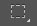
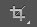
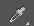
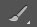
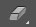
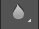
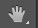

PHOTOSHOP TOOLS
If you used other Adobe products, such as Illustrator or InDesign, you should be familiar with the toolbox in Adobe Photoshop CS6 as it shares some of the tools from these applications.
If you are a new user of Adobe products, you should keep in mind that you might not need to use all of the tools. In this tutorial, only the basic tools will be discussed in-depth.
Some tools in the toolbar have additional “hidden” tools. These tools have small black triangles in the right-hand corner. To view the “hidden” tools, click and hold down on any tool that has a gray triangle in the corner .
Selection tool
Move
Used to select and move objects on the page.
Click the tool button, then click on any object on the page you wish to move.
Marquee
Selects an object by drawing a rectangle or an ellipse around it.
Click the tool button, choose a rectangular or an elliptical marquee. Drag the marquee over the area of the image you wish to select.
Lasso
Selects an object by drawing a freehand border around it.
Click the tool button, drag to draw a freehand border around the are of the image you wish to select.
Magic Wand
Selects all objects in a document with the same or similar fill color, stroke weight, stroke color, opacity or blending mode.
By specifying the color range or tolerance, you can control what the Magic Wand tool selects.
Crop
Click the tool button, then click and drag the tool over the part of the image that you want to keep. Resize the selected area dragging the squares at the sides and corners.
Click the Return/Enter key when your crop box is sized correctly.
Eye Dropper
Takes color samples from colors on the page and displays them in the Color Boxes.
Select the tool, click on the color in the image you wish to sample.
The Color Box will display this color
Alteration tool
Healing Brush
Corrects small blemishes in scanned photos.
Select the tool, hold down the ALT key and left-click on the base color you need to heal. Then left-click over the blemish.
Brush
Draws brush strokes of different thicknesses and colors.
Select the tool. Then click on the selected area, drag to draw lines. Use the Options bar to change the brush, mode, opacity and flow.
Clone Stamp
Takes a sample of an image and applies over another image, or a part of the same image.
Select the tool. Hold down the ALT key and left-click on a certain point of the document where you want to start your copy point. Then, put your mouse over whatever part of the new document you want the picture to go to. Hold down the left mouse button and drag the mouse across the page to copy the picture.
Art History Brush
Paints over an image using the source data from a specified history state or snapshot.
Select the tool, specify the brush, blending mode, opacity, style, area and tolerance.
Eraser
Removes part of an existing path or stroke. You can use the Erase tool on paths. Text can only be erased when rasterized.
Select the tool, click on the part of the image you wish to erase. Drag to erase pixels.
Paint Bucket
Applies a color fill to a selected part of the image or to an entire layer.
Select a layer you wish to apply the paint bucket to, click the tool button, click on the starting point, and click the area you wish to fill.
Blur
Blurs the sharp edges of an image.
Select an area where you wish to apply the tool. Click the tool button and choose the brush, mode, and strength. Drag the brush along the edges.
Drawing and Selection Tools
Path Selection
Selects paths and path segments.
Select the tool, click anywhere on the path.
Type
Types text on a page. Every time you click the Type Tool on a new portion of the page, a new layer will be created.
Select the type tool, click on the page and begin to type. You can specify the font and size in the Options bar. You can also resize and transform the text box by dragging the squares at the sides and corners. Use the Move Tool to move the text on the page.
Pen
Draws smooth-edged paths.
Select the tool, click on the page and drag to draw a path. Click and drag the anchor points to modify the path.
Line Shape
Draws a straight line.
Other shapes that are hidden in this tool are: Rounded Rectangle Tool, Ellipse Tool, Polygon Tool, Line Tool, and Custom Shape Tool. Select the tool, click and drag on the page to draw a line.
Additional tools
Hand
Allows you to move around within the image.
Select the tool, click on the spot on the page, hold the mouse button down, drag to move in the area.
Magnify
Magnifies or reduces the display of any area in your image window.
Select the tool, choose Zoom In or Zoom Out in the Options bar, click on the area of the image you wish to magnify or reduce.
Color Boxes and Modes
Color boxes
.jpg)
The foreground color appears in the upper color selection box and represents a color that is currently active. The background color appears in the lower box and represents an inactive color.
1. To change the foreground color, click the upper color selection box in the Toolbox.
2. To change the background color, click the lower color selection box in the Toolbox.
3. To reverse the foreground and background colors, click the Switch Colors icon (the arrow) in the toolbox.
4. To restore the default foreground and background colors, click the Default Colors icon (the little black and white boxes) in the toolbox.
Note: If you are using the Gradient Tool, the currently selected foreground and background colors will be the default colors of the gradient.